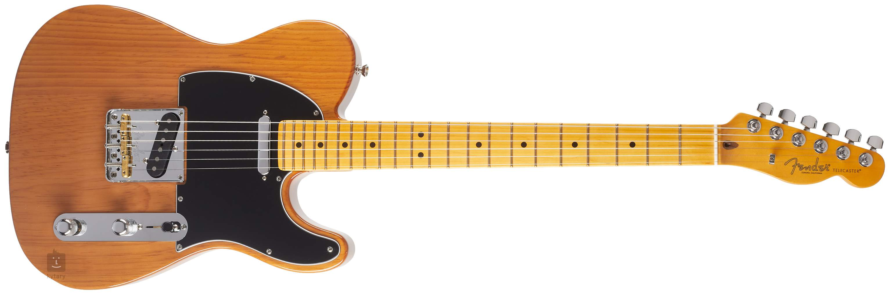
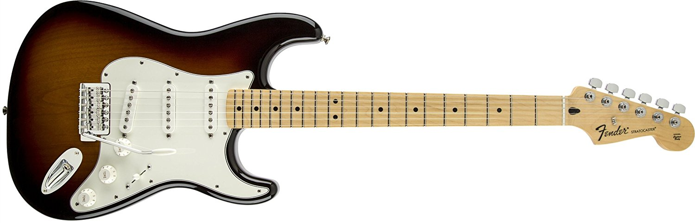
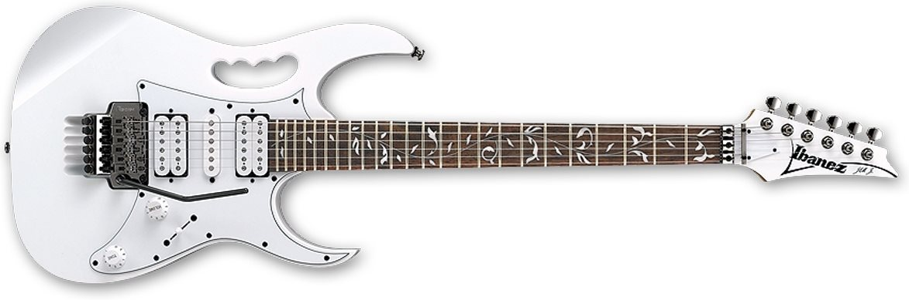
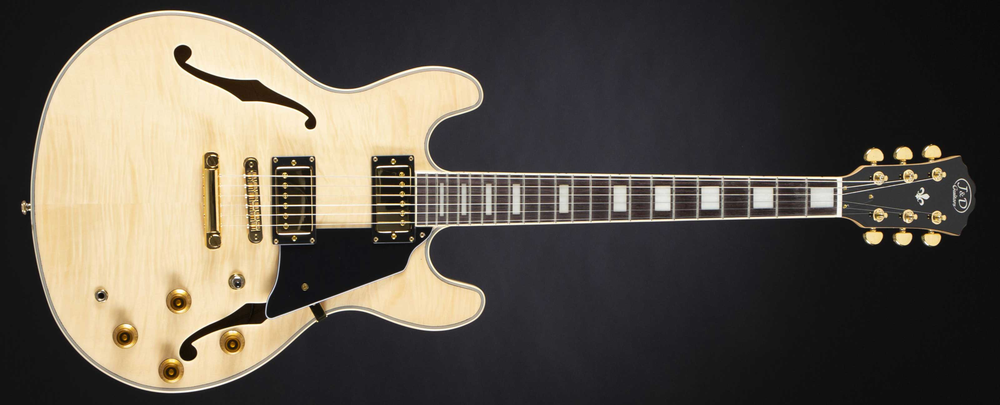

Telecasters

The archetypical Fender Telecaster is a solid-body electric guitar
with a flat asymmetric single-cutaway body; the body is usually made
from alder or ash. Most Telecasters have two single-coil pickups, a
pickup selector switch, a single volume control and a single tone
control.
Stratocasters

The classic Strat design is the alder body, one-piece maple neck,
three single-coil pickups, and synchronized tremolo system.
Superstrats

The Super Strat, though modeled after the Stratocaster, is a very
different guitar. Basically, the only similarity this guitar really
has to its namesake is the body style. The pickups generally used in
Super Strats are of a higher output, which makes them more suited for
metal and hard rock.
Semi-Hollow Guitars

Semi-Hollow Guitars are guitars which have an exposed opening,
generally in the form of two f-holes on the top of the guitar’s body.
The inner chamber of the guitar is then divided into two by a block of
wood which runs through the body.